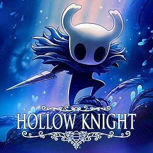

|  |  |
| | |
Hollow Knight es un videojuego perteneciente al género metroidvania. El videojuego fue inicialmente lanzado para Microsoft Windows en febrero de 2017, y más tarde para macOS y Linux en abril de 2017. La adaptación para Nintendo Switch fue lanzada el 12 de junio de 2018. El desarrollo fue parcialmente financiado como un proyecto Kickstarter que obtuvo 57 000 dólares hasta finales de 2014. El juego fue lanzado en las consolas PlayStation 4 y Xbox One el 25 de septiembre de 2018.
En esta página encontraras guias para completar el juego.

Puedes ver los distintos mapas que existen en el juego en la pagina "Zonas". Si estas perdido puedes revisar el camino a distintas ubicaciones de cada zona
Puedes revisar una lista de los distintos Bosses/Jefes del juego en la pagina "Bosses"
Tambien puedes revisar los distintos amuletos del juego y sus efectos en la pagina "Amuletos"
Si te interesa revisar la wiki del juego o ver distintos tutoriales, puedes encontrar enlaces adjuntos en la pagina "Enlaces"
Puedes ver diferentes imagenes del juego en la pagina "Recuerdos", ademas cuenta con un formulario para que puedas comprar estas imagenes
Si deseas contactarme puedes consultar mis datos en la pagina "Contacto"